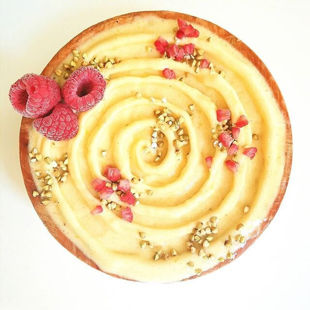

Orange Creamsicle Nice Cream (vegan, gluten free)

Goooood morning! Loving this ORANGE CREAMSICLE nice cream that I topped with buckwheat groats and raspberries. This recipe is just 2-3 ingredients and is such a unique, deliciously satisfying flavor! This recipe is all natural, gluten free, vegan, and has no added sugar, woo!
I see why swirls are so satisfying to make. They're like little ocean waves of joy! I definitely need that these days. Incase you're a blog reader that doesn't follow my other social media, it's news to you that I was in a car accident last Thursday. I posted a youtube video the day of...that explains the details of the crash really. Since then, the most update I have really is the side effects I'm having. First, I have to say, I am SO THANKFUL for the outcome of the crash. I fully recognize that the outcome could have been a million times worse; I definitely have new value to life. But that does not diminish the very really symptoms I'm experiencing now since the crash.
I do have whiplash. I got to the chiropractor immediately; I am going 3 times a week until the doctor sees fit, and they took x-rays to provide adequate care. I had debilitating neck pain 3 years ago when I started working in a lab/office, and they fixed me up amazingly then. So I have full faith that they can fix everything once again, especially since I was able to get treatment within 48 hours of the crash.
Other than the neck pain that causes burning headaches, 2-3 days after the crash I started experiencing extremely nausea and anxiety. Yes, I am an anxious person in general. But this anxiety is so unwarranted. It thunder stormed for the first time 3 days after the crash, and I started to enter an anxiety attack. The entire day I had this...final destination type of mindset and I convinced myself I was going to die alone in my apartment. Everything was making me afraid and I enter random bouts of crying out of fear. Yesterday I had the choice to go back to work or not...and I decided it would be better for me to feel like more of a productive person to go to work. It was rough, but I am glad I did. I almost had an anxiety attack at work, but I was able to calm myself down. I am pretty proud of how I'm getting better at that skill....Anyways. The day back at work was just...so. much. nausea. And like the urge to puke at the idea of food has literally never happened in my life XD food is always first. So it's scary. I've been having to find foods that are simple and light in taste or else I get so sick. I just need to eat what I can. I've had a lot of dates, bananas, and figs. Good thing I was stocked up well on bananas! Things will get better for sure. Still no word on how long the car will take to get fixed...or the cost... Just a little setback but life will go on. I can already tell the chiropractor treatments are slowly working, and my fingers are crossed that the trauma symptoms will slowly subside.
I've frozen a lot of the bananas I had for banana ice cream. This orange creamsicle banana ice cream is just so uniquely tasty, but not too overwhelming or strong in flavor! I love the texture most. Is it just me, or is the texture of ice cream the single most satisfying texture when you're sick or sad? I'm pretty sure there's some sort of science behind it, or else why would kids always get ice cream after the doctor when they're sick?! #scienceIf you're looking for a new version of banana ice cream, or a good first recipe to try, this is great for you!! The recipe is extremely simple, unique, and makes you feel great about it! It is all natural, gluten free, vegan, and paleo if you omit the stevia!
Orange Creamsicle Nice Cream
-
3 frozen bananas
-
1.5 cups frozen mandarin
Blend all of the ingredients in a food processor or high speed blender (I prefer the food processor because it comes out most thick). Top with whatever you'd like! I topped mine with buckwheat groats (the crunch is perfect) and raspberries.